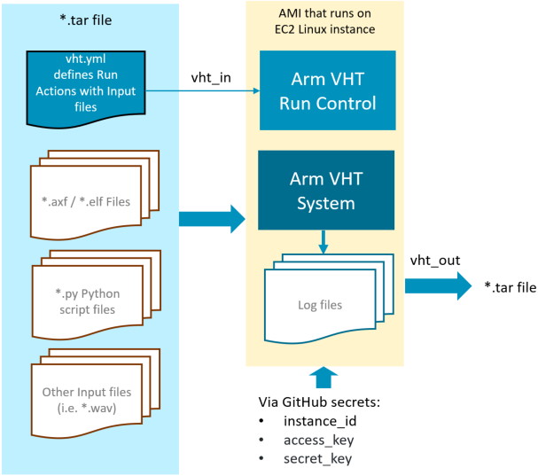

|
Virtual Hardware
Version 0.2 - beta
Infrastructure Service and Tool Integration
|


|
|
Virtual Hardware
Version 0.2 - beta
Infrastructure Service and Tool Integration
|
|
GitHub Actions help you automate tasks within your software development life cycle. GitHub Actions are event-driven, meaning that you can run a series of commands after a specified event has occurred. For example, every time someone commits a push or creates a pull request for a repository, you can automatically run the Arm VHT Services that execute automated build or test scripts. Refer to Introduction to GitHub Actions for information about the components of GitHub Actions.
There are several different ways to execute GitHub Actions:
The approach that you should choose depends on your CI/CD requirements.
The following steps explain how to use self-hosted GitHub runners with AWS Marketplace: Arm Virtual Hardware.
Once this steps are completed, any commit or pull request to the repository should trigger the CI workflow that you have defined.
Once this GitHub action is deployed, it may be manually tested.
Describe the steps, i.e to start https://github.com/MDK-Packs/VHT-TFLmicrospeech/actions
The following steps explain how to use GitHub-hosted runners with AWS Marketplace: Arm Virtual Hardware.
Once this steps are completed, any commit or pull request to the repository should trigger the CI workflow that you have defined.
An Amazon Machine Image (AMI) provides a complete tool installation that can be integrated with GitHub Actions. To simplify integration the Arm Arm Virtual Hardware - GitHub Action can be integrated into GitHub jobs. This action manages connection, upload and execution of a test suite on Amazon EC2 Linux instance that runs an Arm VHT AMI.

The VHT-AMI action receives a *.tar input file (vht_in) that contains the vht.yml control file. The vht.yml is the run control commands for the AMI and defines the execution of build scripts or test runs. Once the AMI run control commands are complete the results are returned as *.tar file to the GitHub runner.
The file action.yml defines the parameters for the GitHub action.
The following AWS account requirements are needed to run VHT-AMI action.
You need to create a PassRole IAM policy to be attached to our IAM User with the following content. You can name it vht-passrole.
More info: Create IAM Policy
You have to create an IAM User to limit resource permission to your CI. In addition, the IAM User provides fixed AWS Access Key Id and AWS Secret access key values. For this user, you have to add the following policies:
You also need to add the following Permission boundary:
The user can be called vht.
More info: Create IAM User
You have to create IAM Role to be attached to the EC2 Instances. This role gives EC2 Instances access to S3 buckets and SSM services. For this role, you have to add the following policies:
You also need to add the following Permission boundary:
More info: Create IAM Role For Service
You can now consume the action by referencing the v1 branch
Where
Refer to Creating encrypted secrets for a repository for storing the AMI access information.